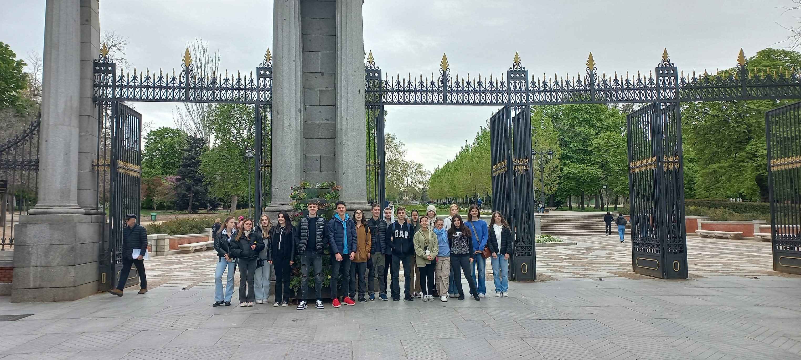
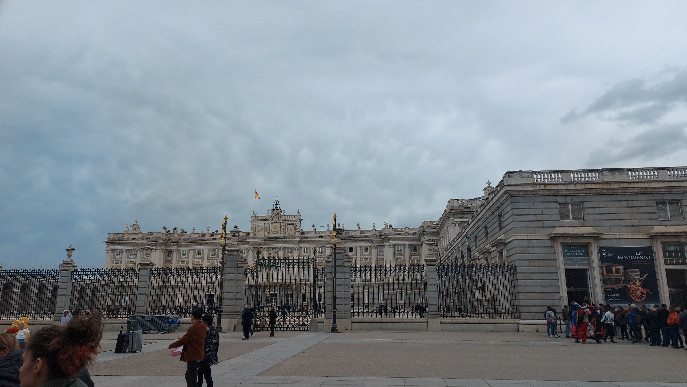
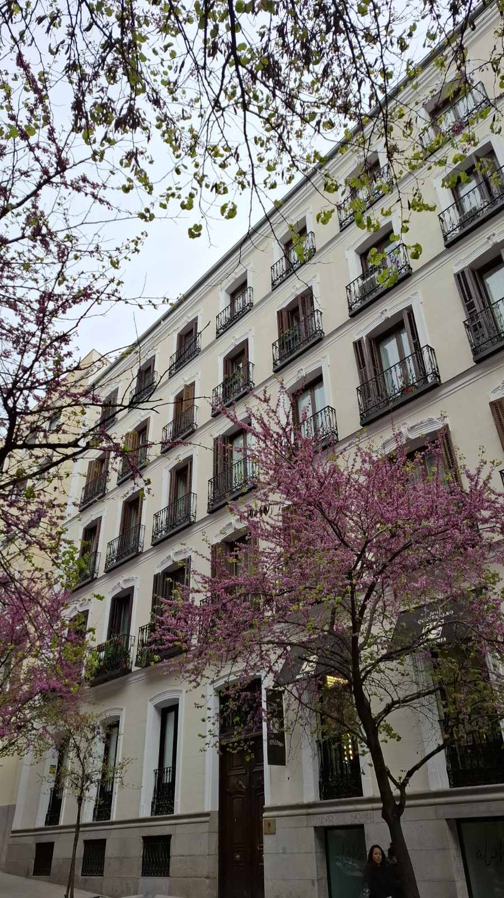
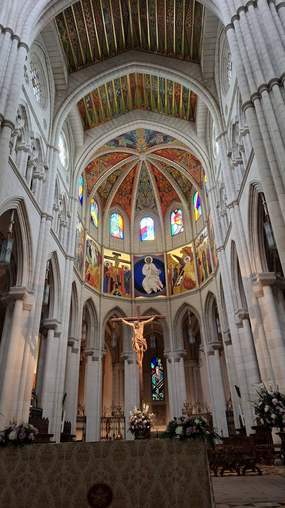
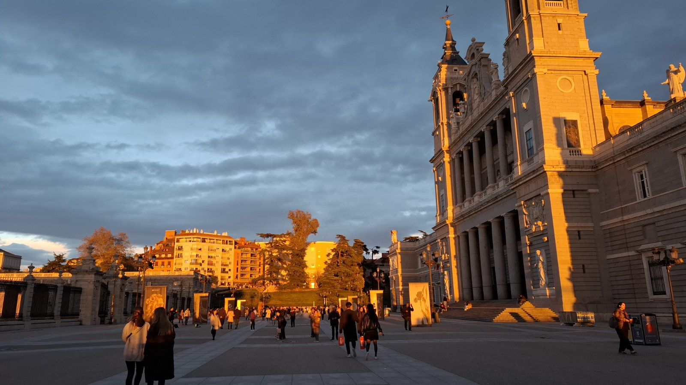
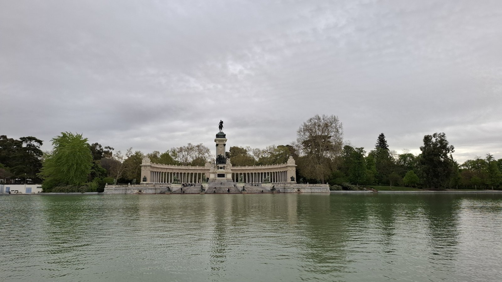

Madridban jártunk 2024. 04. 01-05-ig.
Eleinte kicsit hűvös, de a végére szép napos időnk volt. Rengeteg helyen jártunk, és minden nap új helyeket fedeztünk fel. Voltunk templomokban, sétáltunk parkokban, jártunk múzeumokban, például a Prado múzeumban. Napi 25-30.000 lépést tettünk meg, amitől a nap végére mindenki kellően elfáradt.
Megkóstóltuk a helyi ételeket, köztük a churrost is. Készült tiramisu is, bár elsőre nem sikerült túl jól, hiszen a 100g cukor helyett 1 kiló került bele, amitől egyesek majdnem cukormérgezést kaptak, de másodikra már tökéletesen sikerült.
Nagyon jól éreztük magunkat, és rengeteg új emlékkel tértünk haza.





